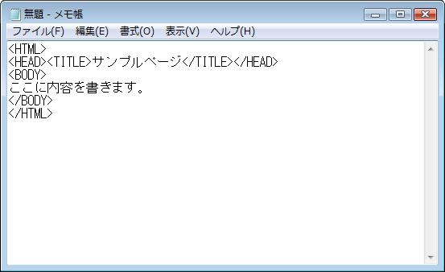
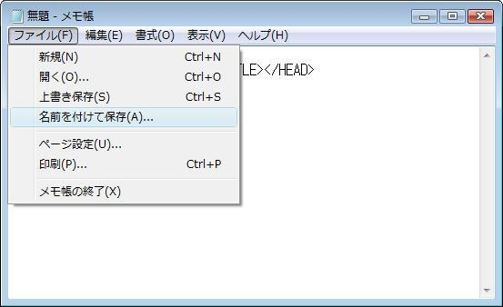
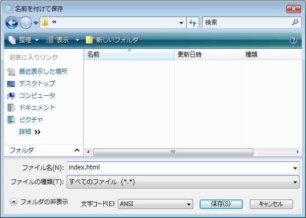

|
HTMLファイルはメモ帳で作ることができるので、メモ帳を使った作り方を説明したいと思います。
まずは、メモ帳を開きます。そして、前回紹介したサンプルページのソースを入力します

次に、「ファイル(F)」を開いて、「名前をつけて保存」をクリックします。

すると、次の画面が出ると思うので、「ファイルの種類」は「すべてのファイル」を選択してください。
ファイル名は必ず半角英数字で入力し、拡張子を「.html」に変更して「保存」をクリックしてください。

これで、HTMLファイルを作成することができます。
また、ホームページを開いて最初に開かれるHTMLファイルは大抵、
「index.html」という名前がつけられています。
|